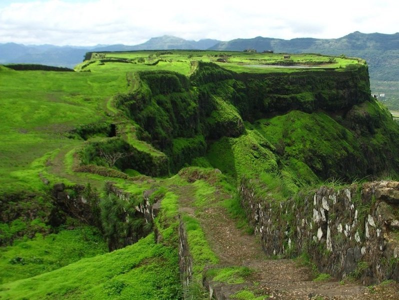
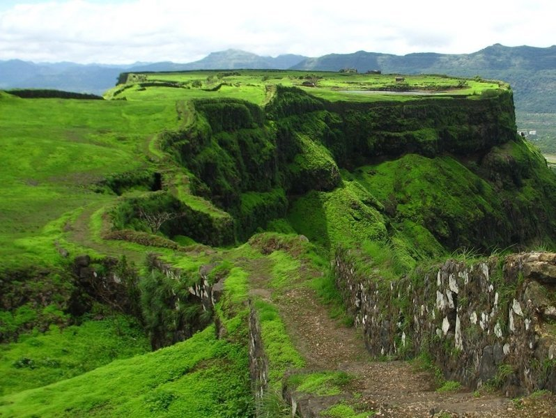

Korigad
 

About
Korigad Fort, also known as Koraigad Fort, is a historic hill fort located in the Pune district of Maharashtra, India. It is situated near the village of Peth Shahpur, approximately 20 kilometers south of Lonavala and about 80 kilometers from Pune city. The fort is perched at an elevation of around 3,050 feet (930 meters) above sea level in the Sahyadri mountain range.
History:
Korigad Fort has a long and rich history that dates back to ancient times. It is believed to have been originally built by the Shilahara dynasty during the 12th century. Later, it came under the control of various rulers, including the Bahamanis and the Nizamshahis. However, the fort gained significant importance during the reign of Chhatrapati Shivaji Maharaj and became an essential part of the Maratha Empire's fortification line.
Chhatrapati Shivaji Maharaj captured Korigad Fort in 1657, making it one of the many forts under his control. The strategic location of the fort, situated between two major forts, Lohagad and Tikona, made it a crucial stronghold for the Marathas to defend the region.
Korigad Fort is renowned for its impressive architecture, historical significance, and breathtaking views of the surrounding landscape. Some of the key features of the fort include:
Entrance Gate: The fort has a majestic main entrance gate, known as the "Mahadarwaja," which is still in good condition.
Ganesh Temple: At the top of the fort, there is a beautiful temple dedicated to Lord Ganesh, attracting devotees and trekkers alike.
Fortifications: The fort's walls and bastions are well-preserved, showcasing the military architecture of the past.
Ample Water Supply: Korigad has several water cisterns and tanks that used to provide a consistent water supply to its inhabitants.
Trekking and Tourism:
Korigad Fort is a popular destination for trekkers, history enthusiasts, and nature lovers. The trek to the fort starts from the base village of Peth Shahpur and takes around 1.5 to 2 hours to reach the summit. The trek offers a mix of easy and moderate trails, making it suitable for trekkers of different experience levels.
The fort is particularly popular among trekkers during the monsoon season when the surroundings turn lush green, and waterfalls cascade down the cliffs, adding to the charm of the trek.
Today, Korigad Fort is managed and maintained by local authorities and attracts a steady flow of visitors who come to explore its historical significance, enjoy the trekking experience, and revel in the natural beauty of the Sahyadris.